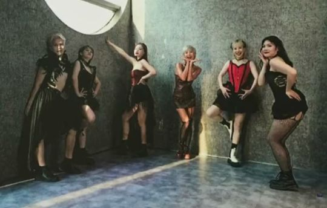

原片 00:24.00 · 局部裁切
A / 人物
蓝帽白衫人物
以蓝色贝雷帽、浅色长发、白衬衫和前后画面关联。片名中的创作者署名仅作来源信息，不凭外观推断真实身份。
返回满的片库 · CASETiFY 创意短片 · 仅视觉分析
27.57 秒｜21 个实测镜头单元。网页为 540×960 完整兼容预览；原片测量规格为 1080×1920。重点：人物抠像、花形揭示、照片跳步、手机扫过收纳、翻面换壳、字母珠与错位花字。用户评价：“这个创意短片挺好的”。仅确认整体喜好；具体偏好维度尚未确认。本次按用户要求跳过声音。
画面交代看到了什么，动作过程交代怎样发生。长镜头按镜内变化分段；没有新动作的镜头，也写清状态和作用。
按可见外观和画面作用建立索引；照片合集不是同一个人的身份结论。
原片 00:24.00 · 局部裁切
以蓝色贝雷帽、浅色长发、白衬衫和前后画面关联。片名中的创作者署名仅作来源信息，不凭外观推断真实身份。

原片 00:09.03 · 局部裁切
照片中的运动、旅行、居家与合影人物按一个素材集合记录；不声称各张照片必为同一个人。头像为 9.03 秒六人合影的真实局部。
| 人物／群体 | |||||||||||||||||||||
|---|---|---|---|---|---|---|---|---|---|---|---|---|---|---|---|---|---|---|---|---|---|
| A · 蓝帽白衫人物 | 主要 | 主要 | — | — | — | — | — | — | — | — | — | — | — | — | — | — | — | — | 主要 | 主要 | — |
| P · 生活照片中的人物合集 | — | — | 主要 | 主要 | 主要 | 主要 | 主要 | 主要 | 主要 | 背景 | — | — | — | — | — | — | — | — | — | — | — |
每条分析附回看片段：先列画面与声音证据，再解释组织方式，最后给出可以放进自己作品的写法。
原片观察与听辨0–4.2 秒由表情头部、花朵与人物小剪影引出实拍；10.47–19.97 秒照片由铺开转为消失，最后露出照片拼贴壳面。
怎样起作用我的解读：想象→经历→记录→个性商品，形成视觉意义链。原片没有展示照片被真实传输到壳面的技术过程。
写进自己的提示词重做建议：为每个抽象词确定一个可见对象与结果；想法对应花，经历对应照片，记录对应手机，个性对应照片壳。
原片观察与听辨开场头部在下方，上方让给花朵；室内桌面与后续软木俯拍都给产品留固定位置；片尾绿墙回到人物。
怎样起作用主体落点稳定，花朵、照片和产品轮流接管空白，画面信息多但观看对象明确。
写进自己的提示词重做建议：先定人物/产品的锚点，再安排文字；照片墙与产品陈列沿用同一软木底，不在每段换一种底。
原片观察与听辨4.2–6.43 秒拿机与开套的动作由真人完成；6.43 秒变成照片，随后照片快切；19.97–21.4 秒字母珠以短促状态切换推进。
怎样起作用相同内容先作为真实空间，后作为可摆放的照片，切换观看层级；珠子通过剪辑省去冗长手工过程。
写进自己的提示词重做建议：真实接触与重力下垂尽量实拍；花形遮罩、照片替换和字母状态留给后期。不要要求模型在一镜内同时稳定生成脸、手、照片内容和多字中文。
原片观察与听辨开场复合镜约 6.43 秒；单张生活照片约 0.47–0.53 秒轮替；桌面收纳段约 9.5 秒内多阶段变化；字母珠短镜约 0.2–0.27 秒；结尾人物与品牌重新留停顿。
怎样起作用快段突出“多”，慢段交代“怎样转变”。镜长统计不能衡量长合成镜内部的动画密度。
写进自己的提示词重做建议：照片轮播只选差异明显的图；收纳与翻面给足可读过程；字母短镜之后留完整挂绳，避免全片均速抖动。
原片观察与听辨蓝帽、浅色头发、白衬衫在开头和结尾复现；黄紫条纹图案由工作桌延续到桌面陈列；后半部照片壳与照片内容呼应。
怎样起作用人物外观和产品图案承担跨镜识别；运动照片中的人不因短发或肤色相似就能认定为主角。
写进自己的提示词重做建议：分别准备人物、黄紫图案产品、照片壳和挂绳参考；手机屏幕面与壳面建立明确对应；不要把照片中的所有人都换成同一个脸。
原片观察与听辨手机扫过时照片分批消失；16.5–16.9 秒与18.5–18.9 秒附近可见手机朝向改变；随后真人佩戴照片壳。
怎样起作用“收纳”的观感来自手机路径与消失时机对应；翻面把屏幕和定制背壳连接起来，是产品解释的关键接缝。
写进自己的提示词重做建议：先拍一条不换壳的完整翻面动作，再在壳面可见时贴合图案。锁定外框、摄像头孔、指尖遮挡与背壳朝向；切点前后不能凭空换手或让照片重现。
原片观察与听辨花朵带白边与不规则轮廓；白边照片略有旋转、分批出现与清空；黑色字配白边和少量色块，按词组错位排列；尾卡也带轻微倾斜。
怎样起作用元素靠边缘、材质和错位节奏统一。花朵既可当装饰，也在4.1秒承担揭示转场，17.7秒响应触屏；重复元素建立整片联系。
写进自己的提示词重做建议：照片和字形保留轻微角度差，位移/缩放可用少量跳步；只在花形揭示和翻面等交接处用连续运动。曲线、字体名与软件未确认，不能把建议参数当原片工程。
原片观察与听辨用户明确要求“不用声音”，本次未听辨或分析配乐。
怎样起作用不据画面推断音乐风格，也不把播放音轨视作已分析。
写进自己的提示词本次不输出配乐制作建议。
原片观察与听辨用户明确要求“不用声音”，本次未听辨或标注音效、对白与声画同步。
怎样起作用画面节奏仅由可见状态、切换和停留判断。
写进自己的提示词本次不输出声音提示词。
悬浮头部→花朵拼贴→花形揭示→真人工作桌。
统一软木底，用横竖照片与内容差异做轮播。
铺照片→手机扫过清图→屏幕→花朵反馈→照片壳。
逐颗字母→完整挂绳→三件产品与主题文案。
整理佩戴→表情与主口号→留白品牌尾卡。
每几秒写明景别、机位、运镜、动作和结束状态。长镜头展开内部变化，切镜保留准确时间点。
30 个拍摄时间窗对应原片 21 个镜头。时间窗覆盖全片；镜内合成变化与硬切分列。提示词是重新制作设计，数值不代表原工程参数。
镜头：头部特写，正面平视的抠像素材；奶油白平面构图保持，头部落在中下区。
动作：先张口和微笑，再把视线转向上方；身体不入画，帽子与两侧头发边缘保持稳定。
结束／衔接：头部仍在原锚点，上方留白等待图层进入。
镜头：保持头部尺度；在其上方安排独立纸片图层，按不同位置与大小错峰出现。
动作：小人物先出现，多色花朵在周边扩展；头部继续小幅转眼和表情变化。不要改变主角脸型。
结束／衔接：帽子上方形成花朵弧线，小人物退出或缩小，留给下一步整体收拢。
镜头：同一平面合成镜内，整体快速缩小；再扩大花形蒙版揭示正面桌景，不另作硬切。
动作：桌景内的人物正在举手机查看；花朵轮廓向边缘展开，逐渐让出完整房间。
结束／衔接：花形边缘出画，工作桌画面完整可见。
镜头：中景固定，相机在桌子对面；左前放平板、中前留手机落点、右前放麦克风。
动作：人物双手查看手机，再将手机连支架放稳，手离机后打开平板保护套；接触顺序清楚。
结束／衔接：平板已立起、手机位于桌面，准备作为下一张照片的内部画面。
镜头：白边照片的外层近景，正对软木平面；画面保持，以硬切替换照片内容和横竖比例。
动作：前镜的工作桌状态被框进照片，人物仍面向左侧设备；画面短暂保留，准备进入生活照片轮播。
结束／衔接：保持本张照片的完整状态，下一镜硬切为另一种生活状态。
镜头：白边照片的外层近景，正对软木平面；画面保持，以硬切替换照片内容和横竖比例。
动作：照片以内是已固定的支撑姿势；外层照片保持，不把静态照片写成完成了一次俯卧撑。
结束／衔接：保持本张照片的完整状态，下一镜硬切为另一种生活状态。
镜头：白边照片的外层近景，正对软木平面；画面保持，以硬切替换照片内容和横竖比例。
动作：保持人物扶板的静态画面；照片与背景的倾斜关系形成变化。
结束／衔接：保持本张照片的完整状态，下一镜硬切为另一种生活状态。
镜头：白边照片的外层近景，正对软木平面；画面保持，以硬切替换照片内容和横竖比例。
动作：人物与宠物作为静态生活记录保持；不从单帧推断具体对话或情绪动机。
结束／衔接：保持本张照片的完整状态，下一镜硬切为另一种生活状态。
镜头：白边照片的外层近景，正对软木平面；画面保持，以硬切替换照片内容和横竖比例。
动作：照片保持两人靠近手机的瞬间；未展示拍照按键动作。
结束／衔接：保持本张照片的完整状态，下一镜硬切为另一种生活状态。
镜头：白边照片的外层近景，正对软木平面；画面保持，以硬切替换照片内容和横竖比例。
动作：整张合影保持静止，人物手臂与腿部形成各自的方向；没有连续舞蹈动作证据。
结束／衔接：保持本张照片的完整状态，下一镜硬切为另一种生活状态。
镜头：白边照片的外层近景，正对软木平面；画面保持，以硬切替换照片内容和横竖比例。
动作：照片内是一侧手臂抬起的静态姿势；不补写完整的起身或攀爬过程。
结束／衔接：保持本张照片的完整状态，下一镜硬切为另一种生活状态。
镜头：白边照片的外层近景，正对软木平面；画面保持，以硬切替换照片内容和横竖比例。
动作：笑脸照片保持；从大动作和多人场面收回一个清楚的面部状态。
结束／衔接：笑脸照片读清，下一镜切到产品与照片总览。
镜头：固定垂直俯拍近景，软木面纹理稳定，手机横放上方。
动作：白边照片从少到多逐批出现，允许一轮清空重排的跳步；最后收敛为三行，不让照片漂移扭曲。
结束／衔接：三行照片基本齐全，黄紫手机在上方。
镜头：保持俯拍，照片为中段，底部留文案空间。
动作：照片略有角度差并短暂保持；“每个日常”以黑字白边错位排在底部，保留阅读间隔。
结束／衔接：照片墙已读，手部即将从边缘进入。
镜头：固定俯拍；手机从上方被拿起，向画面下方的照片行移动。
动作：白袖手先握住手机再抬起；手机逐排划过时，对应照片通过蒙版或逐帧替换消失；不要宣称真实扫描功能。
结束／衔接：桌面照片减少到下方残余，手机仍被握住。
镜头：相机保持；用手腕翻转改变手机朝向，不旋转背景。
动作：上方显示“都值得被记录”；剩余照片退尽，手机由背壳朝镜转为屏幕朝镜，保持指尖与边框接触。
结束／衔接：屏幕正对镜头，桌面留白。
镜头：固定俯拍，屏幕占中部，下侧手臂提供支撑。
动作：短暂展示屏幕中的视觉稿，不生成可用的虚构界面文字；只用授权的屏幕截图进行后期替换。
结束／衔接：持机稳定，为触屏反馈留空间。
镜头：固定俯拍；手机近景，文字分布于机身两侧上方。
动作：一手支撑，另一手食指靠近并触碰屏幕；花朵从屏幕周边错峰弹出、停留后退出，“从创意中”分散布局。
结束／衔接：另一只手退开，花朵消退，手机仍在同一握持位置。
镜头：固定俯拍机位；先保持屏幕尺度，再随手腕翻转露出背壳。
动作：手指夹住边框带动手机翻面；在背壳可见区贴入与前面照片呼应的密集拼贴；摄像头孔与壳边不变形，略抬近展示。
结束／衔接：照片背壳稳定正对镜头，下一镜硬切到挂绳。
镜头：大特写，垂直俯拍挂绳结与交叉绳段，机位保持。
动作：挂绳保持盘绕；暂未出现完整姓名字母珠，先建立后续变化的对象。
结束／衔接：保持本镜新增的字母状态，下一镜只沿读字顺序增加，不移除已有珠子。
镜头：大特写，沿用软木与黑绳，固定机位、以硬切加一颗珠。
动作：通过跳切出现第一颗字母珠；没有展示手穿珠的过程。
结束／衔接：保持本镜新增的字母状态，下一镜只沿读字顺序增加，不移除已有珠子。
镜头：大特写，固定俯拍，A/L两颗成为画面中下方重点。
动作：珠子由一颗变为两颗，位置与构图略有跳动；保持可读的 A、L 顺序。
结束／衔接：保持本镜新增的字母状态，下一镜只沿读字顺序增加，不移除已有珠子。
镜头：大特写，以硬切调整取景，保持珠子邻接关系。
动作：第三颗粉色 E 珠出现，姓名信息继续接近完成。
结束／衔接：保持本镜新增的字母状态，下一镜只沿读字顺序增加，不移除已有珠子。
镜头：大特写，强调新增X与邻近的L/E，不要求每个字母完整入框。
动作：X 珠加入，完整序列应由相邻镜理解；本镜并不要求每个字母都同时完整入框。
结束／衔接：保持本镜新增的字母状态，下一镜只沿读字顺序增加，不移除已有珠子。
镜头：特写，切宽少许让ALEX四颗一起入画，相机保持。
动作：从局部完成态切到四珠同框，确认拼字结果；没有新增穿珠动作。
结束／衔接：保持本镜新增的字母状态，下一镜只沿读字顺序增加，不移除已有珠子。
镜头：由特写向完整挂绳取景拉宽；可用数字缩小，中心锚点稳定。
动作：整幅挂绳取景持续变宽，珠子缩小，最后呈现可作为商品陈列的全貌。
结束／衔接：完整盘绕的挂绳与字母可识别，准备切产品总陈列。
镜头：固定垂直俯拍近景，大平板在上，手机在左下，挂绳在右下。
动作：产品大体保持，文案逐字错位建立阅读路径；挂绳既是配件也是连结几件商品的线条。
结束／衔接：产品与主题文案完整保持，准备切到真人佩戴。
镜头：中远景，人物正面略有侧身，固定机位保留腰部与斜跨挂绳。
动作：她低头把手机与挂绳连接位置整理好，手机从手持状态向身体一侧下垂；姿态从操作过渡到展示。
结束／衔接：手机已与挂绳连接，落到身体一侧，人物抬头。
镜头：中景，硬切到较近取景；人物头侧留标题区，相机保持。
动作：人物微转头、笑与张口，手指靠近脸侧；标题换位并逐渐落在右上，形成结束姿势。
结束／衔接：人物笑容与口号形成稳定结果，随后硬切尾卡。
镜头：无景别，奶油白平面尾卡，机位保持。
动作：人物与桌面切走，只留下品牌标识保持到片尾。
结束／衔接：品牌小标签保持到片尾。
时间与切点由脚本测量，人物和动作由画面复核。结构检查与视觉判断分别记录。
镜头密度 45.7 镜／分钟。景别按主导标注、按时长统计；镜内变化在逐镜档案单独说明。
原片 SHA-256 与 30fps 时间轴实测；逐镜 a/b 与全片 0.5 秒采样已查看。疑点复看：3.5–6.6 秒每 0.1 秒、10.3–19.98 秒每 0.2 秒、19.9–21.5 秒逐源帧。静音浏览器播放与报告交互情况见 frontend-qa.json。用户要求跳过声音。
时间轴与数据检查和视觉判断分别记录。通过结构检查不代表动作已逐帧确认。
Fredtalk Shots bundle validation ✓ metadata: 通过 ✓ timeline: 通过 ✓ cut provenance: 通过 ✓ taxonomy and ids: 通过 ✓ cast and categories: 通过 ✓ frame descriptions: 通过 ✓ rhythm: 通过 ✓ measurement track: 通过 ✓ measured motion: 通过 ✓ frame images and timestamps: 通过 ⚠ engine: S15: 固定机位标注的画面差分较高；复核稳定背景与主体运动。 ⚠ engine: S16: 固定机位标注的画面差分较高；复核稳定背景与主体运动。 ✓ Extended report inputs passed Machine checks cover measured source data, local assets, report structure and prompt timing. They do not verify visual identity, action interpretation, sound understanding or continuous playback; visual review is still required.